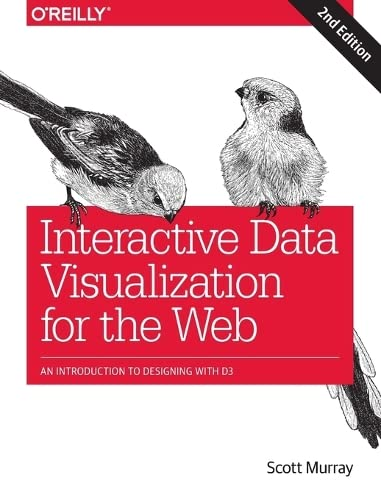

Data Sets
I chose UNICEF's data set. Specifically, the Early childhood devlopment overview.
This takes three areas of measurement: home environment, childhood care and education, and developmental status.
They are collected through household surveys and Multiple Indicator Cluster Surveys.
This data set can be used to identify possible areas areas that can use additional resources
or programs for development.
Book
Interactive Data Visualization for the Web: An Introduction to Designing

I chose Interactive Data Visualization for the Web:
An Introduction to Designing by Scott Murray. This book is an introduction to data visualization, teaching you the basics of D3 which is a Javascript library.
Given I have experience in HTML and Javascript, it seems very interesting to pick up.